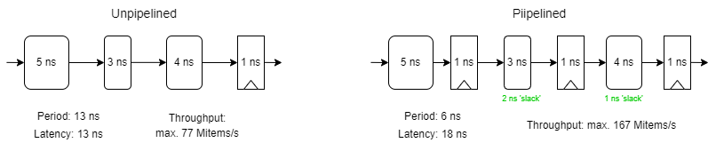
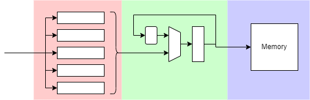
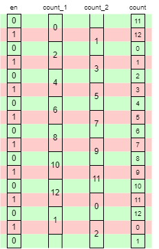

Techniques may include:
Most software programming is, essentially, serial. Although functional languages express algorithms without state, most software programming is, essentially, serial. Imperative languages such as Java or C code algorithms as a series of successive statements. Of course these map well onto the underlying processor which executes them as a series of successive machine instructions.
‘Parallel programming’ largely refers to writing a set of largely independent threads or processes which are each made up of sequences of instructions.
It is therefore not surprising that many people begin writing HDL code in a similar way. This typically results in over-complicated code and inefficient hardware.
Parallelism is easy to express in a HDL although the ‘linear’ nature of the code in a file may make it harder to see. A block diagram or schematic gives a two-dimensional representation of the problem and can often help clarify where parallelism may be available.
If two or more units are able to process at the same time then the elapsed time for the whole task will be reduced. This assumes that there are no serial dependencies between the individual jobs.
An example can be seen in a superscalar processor. It is often possible to execute several instructions simultaneously; it is not possible to execute hundreds of instructions simultaneously because of dependencies.
In some cases parallelism can be used to reduce power consumption. This is usually attributable to the ability to remove expensive speed optimization within a unit but provide an adequate overall performance using several units.
A (contrived) example could be addition: several slow but simple ripple carry adders may provide the same throughput as one larger, fast adder, and may switch less leading to a lower power dissipation.
Another power-saving technique is to employ several units running from a reduced supply voltage; the speed is roughly proportional to V whereas power roughly proportional to V2 . Thus two units at half the voltage may give the same throughput at half the power cost.
Parallelism implies increasing the resources used. There is therefore a cost/benefit trade-off. It is not usually sensible to have many functional units which are underemployed; it is better to have a more flexible unit which is kept busy. This is the rationale for having programmable devices such as microprocessors in the first place!
In some ways parallelism can increase the complexity of a system because there are more things happening at once.
In other way complexity can be decreased. It is easier to design and verify small, simple units so dividing a system in a sensible way can actually make the blocks easier.
The simplification or removal of sequencing logic can help here; if a unit does only one job there its control logic is trivial and there will be no need for many of the buses and multiplexers otherwise required.
As an example, consider the ARM instruction set. Additions are used in several places:
ADD R1, R2, R2
LDR R4, [R5,#&67]
B label
Originally these all shared the same adder (for cost reasons). Nowadays they may have ‘private’ adders which don't need to accommodate other operations.
This also means that less bus multiplexing is needed, simplifying control.
The concept of pipelining should be familiar by now!
Pipelines typically:
They are therefore, generally, a Good Thing.
Pipelining can be a ‘cheap’ way to increase performance. It is cheap(ish) because it introduces parallelism without adding (much) extra logic. Clearly additional latches are required but the processing logic can often be the same as in an unpipelined version.
Pipelined logic typically has higher throughput than unpipelined logic but will always have higher latency too. It is therefore only useful for processing streams of data. The above example illustrates an imperfectly balanced pipeline where the clock cycle is dictated by the slowest stage and some time is wasted in the faster stages. This is typically because the logic will divide ‘naturally’ in certain ways which may be worth retaining for design simplicity and readability. Dividing the logic into a three-stage pipeline – and assuming this can be kept full – has yielded a better than 2× increase in throughput.
A classic pipeline example is the instruction stream in a processor. Data streams, such as are used in graphics, are another good example.
In the laboratory example it is easy to form a pipeline of about three stages (whether the first stage is part of the pipeline could be debated).
The first stage is the pending command and its parameters which can be buffered whilst a previous command is executing. Although this is not operating at the speed of the rest of the pipeline it does provide some ‘elasticity’ in the process and can help to keep the drawing engine busy by providing the next command as soon as the current one finishes.
The other two stages, as shown above, are the iterative drawing stage and the memory write operation. An obvious parallelism exists by calculating the next pixel concurrently with writing the current one.
This pipeline is not free flowing; it can stall, for example whilst waiting for memory access. However this is still faster than performing the operations sequentially.
The division into stages also makes the individual components simpler to design (and test) which is a further benefit. Unlike a processor, there is no forwarding/feedback in this pipeline which also helps keep it simple.
Commercial Graphics Processing Units (GPUs) now typically contain much more logic than this example, transforming, texturing and projecting objects rather than just drawing. The data flow is still simple though, so pipelining is an excellent way of increasing the throughput.
As observed above, pipelining will usually increase latency. Typically this is not an issue in streaming data applications but may be a problem where there are dependencies forming data loops, such as the registers in a processor.
Pipeline stages can be largely independent but there can be circumstances where a stage stalls. In this case it may be necessary to stall the whole pipeline, resulting in a control overhead. Introducing a global control circuit can impact performance as it has to gather all possible stall signals, OR them and rebroadcast the result within the cycle time. This may impact the cycle time, especially if pipelining communications circuits.
[An alternative strategy is discussed in the interconnection lecture.]
Often, the required throughput of a pipeline may be less than its maximum. In such circumstances a validity indicator can be used to ensure only ‘real’ data is processed.
SIMD architecture can process more, smaller data elements simultaneously.
Interleaving can allow more time for individual access.
It is possible to interleave more than two units, of course.
An ‘obvious’ method of increasing throughput is to do several things at once. For example, memory bandwidth can be increased by increasing the width of the memory (e.g. fetching 64 bits/cycle instead of 32). This method assumes that data flows are predictable.
For many years, high performance processors have attempted to execute more than one instruction at once. Approaches include:
An approach which is now quite common is to use SIMD (Single Instruction, Multiple Data) processing. At its simplest, think of a 32-bit processor needing to add a set of 8-bit quantities. Rather than doing these individually, four bytes can be packed into the datapath and added simultaneously. This requires some slight changes to the adder to prevent a carry from one byte affecting an adjacent sum — but this is cheap to do. Many processors have been extended to incorporate such support including the Intel ‘x86’ architecture {MMX, SSE, …} 64- and 128-bit units and ARM's 64-bit ‘NEON’ extensions. These extensions are intended to accelerate stream processing, such as video. Graphics Processing Units (GPUs) typically contain wide, SIMD datapaths for this reason.
Interleaving is an old technique often associated with memory accesses which cannot easily be pipelined. If a memory is too slow to be read in a single cycle it may be possible to have two memories, reading from each alternately and shuffling together the results. This can work for write operations and predictable reads such as code fetches.
However, let's look at a logic example instead. Take some sequential logic – here represented by a counter – which is too slow† for the clock period to allow.
†Unlikely for this logic – but pretend.
Instead of counting in ones at the clock frequency, count in twos at half the clock frequency. This may necessitate using two interleaved counters which only change value on alternate cycles. This allows twice as much time for the logic to operate. (Actually slightly more than that because the register delay is not a factor in the ‘middle’ of the period.) The desired value can then be selected with a multiplexer. Assuming circumstances permit, a following latch is often a good idea to ensure a ‘clean’ output which changes as early as possible in the clock cycle. This will introduce another cycle of latency which may need accounting for in the design.
Here is some example Verilog code to illustrate the operation.

always @ (posedge clk) // Modulo 13 counter
begin
en <= !en;
if (en)
if (count_1 > 10)
count_1 <= count_1 - 11;
else
count_1 <= count_1 + 2;
else
if (count_2 > 10)
count_2 <= count_2 - 11;
else
count_2 <= count_2 + 2;
if (en) count <= count_2;
else count <= count_1;
end
If there is genuinely a need for a multicycle delay in this form the synthesis tools will probably need to be ‘informed’ otherwise they will try – and probably fail – to fit the logic in a single period. It is not a technique to use regularly but it is sometimes a solution to an awkward problem.
Back to Synchronous & asynchronous design.
Forward to multiplication example.
Up to Tradeoffs.